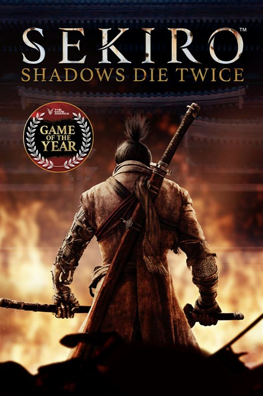

Sekiro: Shadows Die Twice
Sekiro: Shadows Die Twice es un videojuego de acción y aventura desarrollado por FromSoftware y publicado por Activision. Lanzado en 2019, el juego sigue la historia de un shinobi llamado Sekiro mientras busca rescatar a su señor y vengar a su clan. Con un enfoque en el combate preciso y la exploración, Sekiro ofrece una experiencia desafiante en un mundo inspirado en el Japón feudal.
